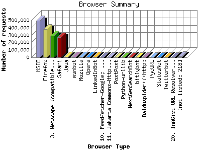

The Browser Summary identifies the most popular web browsers used to visit
this site.
Browsers are broken down by recognized categories such as
Netscape Navigator/Communicator, Microsoft Internet Explorer, WebTV, Opera
and the like. Within each category is also a subgroup by version number
such as 'MSIE 5.0' or 'Netscape 4.5'.
This report shows the first 20 results by number of requests. This report is sorted by number of requests.

| Browser Type | Number of requests | |
|---|---|---|
| 1. | MSIE | 495,623 |
| 2. | Firefox | 379,702 |
| 3. | Netscape (compatible) | 292,386 |
| 4. | Safari | 271,174 |
| 5. | Java | 5,507 |
| 6. | msnbot | 5,229 |
| 7. | Mozilla | 4,388 |
| 8. | Opera | 3,667 |
| 9. | LinkedInBot | 3,480 |
| 10. | Feedfetcher-Google; (+http: | 3,186 |
| 11. | Jakarta Commons-HttpClient | 2,908 |
| 12. | PostPost | 2,169 |
| 13. | Python-urllib | 2,041 |
| 14. | NextGenSearchBot | 1,252 |
| 15. | bitlybot | 1,115 |
| 16. | Baiduspider+(+http: | 1,097 |
| 17. | PycURL | 1,090 |
| 18. | StatusNet | 980 |
| 19. | Twitterbot | 937 |
| 20. | InAGist URL Resolver (http: | 709 |
| [not listed: 218] | 13,370 | |
This report was generated on June 15, 2011 14:02.
Report time frame July 28, 2010 00:18 to June 15, 2011 00:01.
| Web statistics report produced by: analog 6.0 / Report Magic 2.21 |